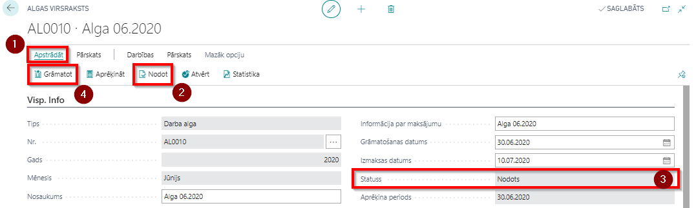

Algas izmaksa
Maksājumu sagatavošana
Algu pārskaita uz darbinieka bankas kontu vai izmaksā uzņēmuma kasē. Informāciju par bankas kodu un kontu ievada darbinieka kartiņas cilnē Maksājumi, bet izmaksas veidu nosaka noklusētā algas komponente (Kods: BANKA) cilnē Algas komponentes.
Algas sarakstu pārskaitījumam uz banku vai izmaksai kasē veido klikšķinot rīkjoslā uz Pārskats ( ) - Eksports uz maksājumu žurnālu (
) - Eksports uz maksājumu žurnālu ( ). Opcijās var izvēlēties nepieciešamo izmaksas veidu (
). Opcijās var izvēlēties nepieciešamo izmaksas veidu ( ):
):
- Izmaksa darbiniekam,
- Pārskaitījumi trešajām pusēm (atvilkumu izmaksas trešajām personām),
- Nostrādātas (abi augstākminētie kopā)
Kā arī opcijās var izvēlēties izmaksas komponentes filtru ( no kāda uzņēmuma konta tiks pārskaitīta nauda) ( ), kādā maksājumu žurnāla iedaļā veidot ierakstus (
), kādā maksājumu žurnāla iedaļā veidot ierakstus ( ).
Gadījumā, ja nepieciešams stornēt jau veiktus maksājumus, jāieliek ķeksis Aizpildīt izmaksas storno (). Pēc žurnāla iegrāmatošanas var veidot atkārtotu izmaksu.
).
Gadījumā, ja nepieciešams stornēt jau veiktus maksājumus, jāieliek ķeksis Aizpildīt izmaksas storno (). Pēc žurnāla iegrāmatošanas var veidot atkārtotu izmaksu.
Tip
Gadījumā, ja izmaksa tiek veikta no kases, tiek izmantota funkcija Eksports uz kases žurnālu. Gan maksājuma žurnālu, gan kases žurnāla iedaļām, lai nebūtu kļūdas paziņojuma, jābūt ieliktam ķeksim lauciņā Atļaut maksājumu eksportu.
Atlasot atbilstošos parametrus un nospiežot pogu Labi, atveras maksājumu žurnāls ar izmaksu informāciju.
Lai iegūtu izmaksu informāciju failā, jāklikšķina uz pogām Banka () un Eksportēt algu maksājumu ().
Lai iegrāmatotu algu maksājumu, rīkjoslas sadaļā Grāmatot/drukāt () klikšķina uz pogas Grāmatot. Tomēr, ja Algu uzstādījumu cilnē Visp.info nav atzīmēta funkcija Atļaut detalizētu maksājumu grāmatošanu, tad algas maksājumu grāmatošanai sadaļā Grāmatot/drukāt () klikšķina uz pogas Algu grupētais grāmatojums.
Papaildus kontrolei un apstiprinājumam pirms algas izmaksas ir iespēja izdrukāt atskaiti ar darbinieku sarakstu un tiem izmaksājamām summām un bankas kontiem, kur tiks pārskaitīts maksājums. Atskaite pieejama rīkjoslas sadaļā Atskaite () - Algu saraksta izdruka.
Algu saraksta grāmatošana
Lai izveidoto algu sarakstu varētu iegrāmatot, vispirms izmanto Rīkjoslas sadaļas Apstrādāt () funkciju Nodot (), lai noslēgtu algu sarakstu () un to vairs nebūtu iespējams rediģēt. Ar funkciju Grāmatot () tiek izveidots Algas grāmatošanas buferis, kurā redzami visi algas saraksta grāmatojumi rindās.

Pārbaudot datu pareizību, jāklikšķina uz pogas Labi. Algas grāmatošanas buferis ģenerē datus no sekojošiem avotiem:
- Kontus, uz kuriem grāmatosies algu aprēķina rindas, sistēma nolasa no algas komponenšu grāmatošanas uzstādījumiem.
- Darba devēja sociālā nodokļa norēķinu kontu sistēma nolasa no Algas uzstādījumu lauciņa Darba dev. soc. nod. konta Nr.
- Izdevumu konts tiek nolasīts no katras Ieņēmumu algas komponentes uzstādījumiem.
- Atvieglojumi un izmaksu summas netiek grāmatoti virsgrāmatā.
- Algas grāmatošanas buferī summas zīme nosaka debeta/ kredīta pusi kolonnai Konta Nr. Ja summa ir pozitīva, tad grāmatojums būs sekojošs: 1100.00 – D 72200 – K 56110 (Pirmā rinda grāmatošanas buferī).

Algu sarakstu statusu un grāmatošanas faktu var redzēt sarakstā Algu saraksti.
Algas lapiņu izsūtne
Algu sarakstā ir saīsne uz funkciju algas lapiņu izdrukai. Ja nepieciešams darbiniekiem izsūtīt algas lapiņas, sistēma izmantos e-pastu, kas norādīts darbinieka kartiņas cilnē Adrese un kontaktinformācija.
Klikšķiniet uz pogām Pārskats () - Algas lapiņa (). Drukāšanas iestatījumu logā izvēlieties Sūtīt e-pastā (), ja nepieciešams izsūtīt tikai atsevišķiem darbiniekiem, izvēlieties darbiniekus () un norādiet periodu (), par kādu vēlaties izsūtīt algas lapiņas.